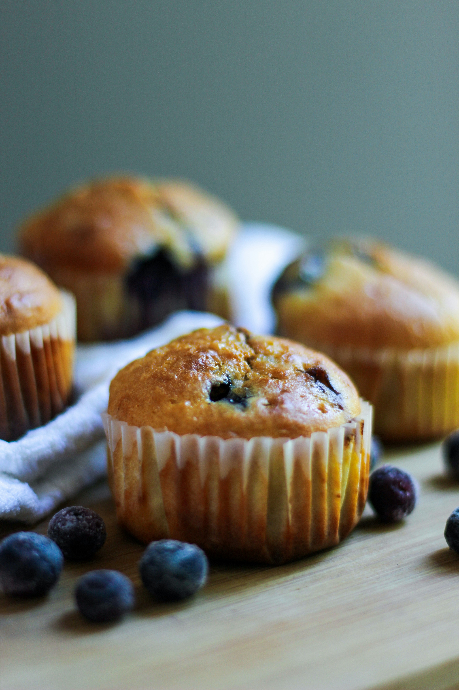

Blueberry Muffins

Description
Big blueberry muffins with a crusty sugar topping. This is a recipe I got from my grandma. The blueberries and the sweet batter are fabulous together — favorites of all who have tried them. They are quick and easy and made with just a few ingredients.
Ingredients
- Nonstick cooking spray
- White sugar
- Unsalted butter
- Salt
- Eggs
- Flour
- Baking powder
- Buttermilk
- Fresh blueberries